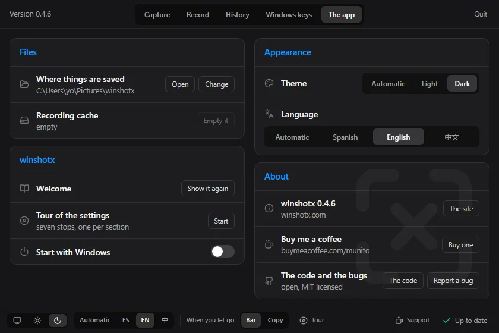

Privacy
winshotx collects nothing: no accounts, no telemetry, no analytics and no crash reports. What you capture stays on your computer. Here is exactly what the app connects to and what for, so you do not have to take our word for it.
What stays on your computer
Every screenshot, every recording, every frame in the editor and every setting is written to your own disk. Nothing is uploaded anywhere.
- Screenshots and videos go to the folder you choose in Settings, and the History tab lists them from there.
- A recording you are editing lives in a temporary folder and is deleted when you discard it. Settings shows how much that cache takes and empties it with one button.
- Always recording the last seconds, if you turn it on, keeps the last 15, 30 or 60 seconds of the screen on your disk and throws away the old as it goes. It never leaves your computer.
The only connections it makes
Two, and you can see both:
- Checking for updates. The version installed from this website or with winget asks
github.comwhether there is a newer release. That request carries nothing but your IP address, which any web request carries. The one from the Microsoft Store does not even do that: the Store updates it. - Opening a link you pressed. The app can open four addresses in your browser, and only when you press their button: this website, the GitHub repository, the page for reporting a bug and Buy Me a Coffee. None other.
What Windows lets it do, and what for
- Read the screen. It is a capture tool: without this there is no product. The image goes to the file or the clipboard, never anywhere else.
- Listen for its keyboard shortcuts, so they work while you are in another program. It watches for its own combinations and lets everything else straight through: it does not write down what you type.
- Record the PC sound, your microphone and your webcam, only while a recording is running and only the ones you turned on.
- Start with Windows, only if you turn it on yourself. It is turned off from Settings, and from Task Manager as well.
If you connect an AI agent (Claude Code, Codex, Cursor), it talks to winshotx on your own computer, without going through the internet. A recording it starts looks exactly like one of yours, with the red frame and the bar.
This website
No analytics, no cookies, no trackers, no third-party fonts and no embedded videos: nothing is loaded from another domain. The hosting keeps the ordinary logs every server keeps.
Children
winshotx is not aimed at children, and collects no data from anyone, whatever their age.
How to check all of this
The code is public, under the MIT licence, at github.com/Mun1to/winshotx. The list of addresses the app may open is a file of its own, src-tauri/src/enlaces.rs, and a test fails if it stops matching the interface.
Changes and contact
If any of this ever changes, it changes here first, with the date. Anything you want to ask goes to the repository issues.
Last updated: 14 November 2026.
